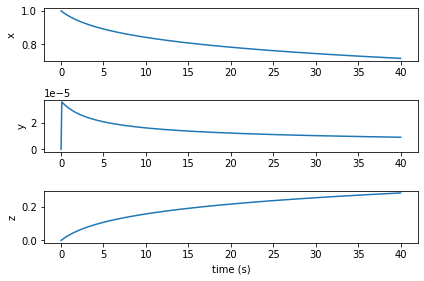

The Robertson Problem¶
The Robertson Problem is a famous example for a stiff ODE. Solving stiff ODEs with explicit integration methods leads to unstable behaviour unless an extremly small step size is choosen. Implicit methods such as the Radau, BDF and LSODA methods can help solve such problems. The following example shows how to solve the Robertson Problem using SciPys LSODA method and Dymos.
The ODE system¶
The ODE of the Robertson Problem is
(66)¶\[\begin{align}
\dot x = & - 0.04 x + 10^4 y \cdot z & \\
\dot y = & \;\;\;\: 0.04 x - 10^4 y \cdot z & - 3\cdot 10^7 y^2 \\
\dot z = & & \;\;\;\: 3\cdot 10^7 y^2 \\
\end{align}\]
where \(x\), \(y\) and \(z\) are arbitrary states. The initial conditions are
(67)¶\[\begin{align}
x_0 &= 1 \\
y_0 &= z_0 = 0.
\end{align}\]
The problem is solved for the time interval \(t\in[0,40)\). There are no controls and constraints.
import numpy as np
import openmdao.api as om
class RobertsonODE(om.ExplicitComponent):
"""example for a stiff ODE from Robertson.
"""
def initialize(self):
self.options.declare('num_nodes', types=int)
def setup(self):
nn = self.options['num_nodes']
# input: state
self.add_input('x', shape=nn, desc="state x", units=None)
self.add_input('y', shape=nn, desc="state y", units=None)
self.add_input('z', shape=nn, desc="state z", units=None)
# output: derivative of state
self.add_output('xdot', shape=nn, desc='derivative of x', units="1/s")
self.add_output('ydot', shape=nn, desc='derivative of y', units="1/s")
self.add_output('zdot', shape=nn, desc='derivative of z', units="1/s")
r = np.arange(0, nn)
self.declare_partials(of='*', wrt='*', method='exact', rows=r, cols=r)
def compute(self, inputs, outputs):
x = inputs['x']
y = inputs['y']
z = inputs['z']
xdot = -0.04 * x + 1e4 * y * z
zdot = 3e7 * y ** 2
ydot = - ( xdot + zdot )
outputs['xdot'] = xdot
outputs['ydot'] = ydot
outputs['zdot'] = zdot
def compute_partials(self, inputs, jacobian):
x = inputs['x']
y = inputs['y']
z = inputs['z']
xdot_y = 1e4 * z
xdot_z = 1e4 * y
zdot_y = 6e7 * y
jacobian['xdot', 'x'] = -0.04
jacobian['xdot', 'y'] = xdot_y
jacobian['xdot', 'z'] = xdot_z
jacobian['ydot', 'x'] = 0.04
jacobian['ydot', 'y'] = - ( xdot_y + zdot_y )
jacobian['ydot', 'z'] = - xdot_z
jacobian['zdot', 'x'] = 0.0
jacobian['zdot', 'y'] = zdot_y
jacobian['zdot', 'z'] = 0.0
Building and running the problem¶
import openmdao.api as om
import dymos as dm
def robertson_problem(t_final=1.):
#
# Initialize the Problem
#
p = om.Problem(model=om.Group())
#
# Create a trajectory and add a phase to it
#
traj = p.model.add_subsystem('traj', dm.Trajectory())
phase = traj.add_phase('phase0',
dm.Phase(ode_class=RobertsonODE,
transcription=dm.GaussLobatto(num_segments=50)
))
#
# Set the variables
#
phase.set_time_options(fix_initial=True, fix_duration=True)
phase.add_state('x0', fix_initial=True, fix_final=False, rate_source='xdot', targets='x')
phase.add_state('y0', fix_initial=True, fix_final=False, rate_source='ydot', targets='y')
phase.add_state('z0', fix_initial=True, fix_final=False, rate_source='zdot', targets='z')
#
# Setup the Problem
#
p.setup(check=True)
#
# Set the initial values
#
p['traj.phase0.t_initial'] = 0.0
p['traj.phase0.t_duration'] = t_final
p.set_val('traj.phase0.states:x0', phase.interp('x0', ys=[1.0, 0.7]))
p.set_val('traj.phase0.states:y0', phase.interp('y0', ys=[0.0, 1e-5]))
p.set_val('traj.phase0.states:z0', phase.interp('z0', ys=[0.0, 0.3]))
return p
# just set up the problem, test it elsewhere
p = robertson_problem(t_final=40)
p.run_model()
p_sim = p.model.traj.simulate(method='LSODA')
--- Constraint Report [traj] ---
--- phase0 ---
None
INFO: checking out_of_order
INFO: checking system
INFO: checking solvers
INFO: checking dup_inputs
INFO: checking missing_recorders
WARNING: The Problem has no recorder of any kind attached
INFO: checking unserializable_options
INFO: checking comp_has_no_outputs
INFO: checking auto_ivc_warnings
Simulating trajectory traj
Done simulating trajectory traj
import matplotlib.pyplot as plt
t_sim = p_sim.get_val('traj.phase0.timeseries.time')
states = ['x0', 'y0', 'z0']
fig, axes = plt.subplots(len(states), 1)
for i, state in enumerate(states):
axes[i].plot(t_sim, p_sim.get_val(f'traj.phase0.timeseries.states:{state}'), '-')
axes[i].set_ylabel(state[0])
axes[-1].set_xlabel('time (s)')
plt.tight_layout()
plt.show()
